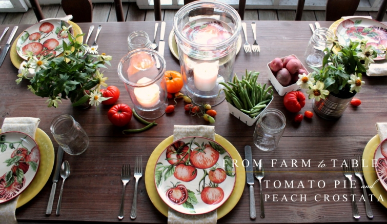
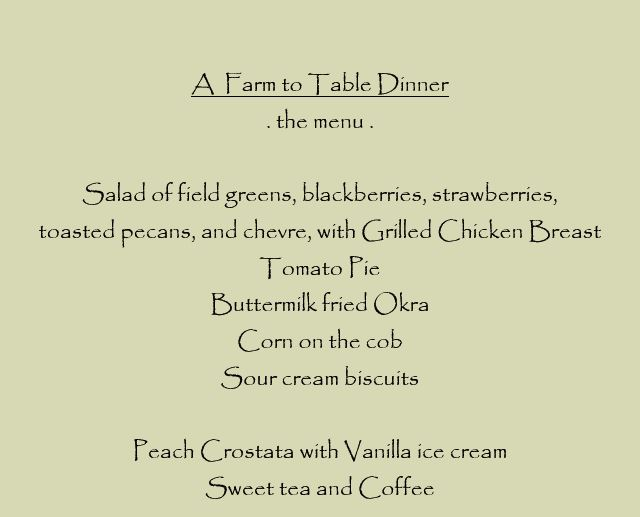
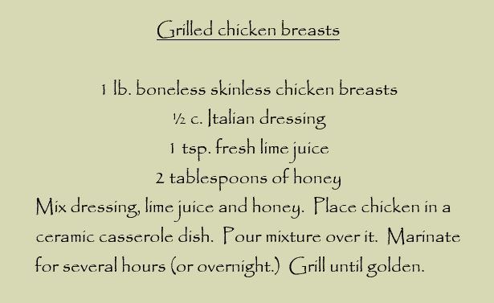

.png)
.PNG)
.PNG)
.PNG)
.PNG)
.PNG)
.JPG)
.JPG)
.PNG)
.PNG)


We are talking food today friends! Do you remember all those lovely tomatoes and that beautiful okra that graced the table in the last post? Well we just couldn’t leave them lying around the house. We had to eat them, right? They all made for quite a delicious dinner, and I want to share that dinner with you today – complete with a couple of recipes! So let’s get started with the menu.

When I first ran this meal idea by my husband, I did not have the grilled chicken with the salad, but he did not like the idea of a “totally vegetarian” dinner. So at his request I added the grilled chicken to it. (I must admit it did add to the flavor of the meal. 🙂 ) You will need to mix up the marinade first and let the chicken soak in it before you make the rest of the meal.

The chicken had a somewhat sweet flavor, but with that salad I think I would have liked it to be a little sweeter. So next time, we will substitute a raspberry vinaigrette or perhaps the Panera Fuji Apple salad dressing for the Italian dressing in the recipe. For the rest of the salad, just mix the ingredients listed in the menu, and you will have it.

For the actual dressing on the salad, we used a champagne vinaigrette, but again, I think it would be better with a sweeter flavor. So use one of the dressings mentioned above or even an orange poppy seed one.
I prepared the dessert before I made the tomato pie so that I could just keep it warming in the oven during dinner, but it will be last in the post today – just because dessert comes last in the meal. 🙂 Let’s take a look at the tomato pie now. It is super easy. I tweaked Paula Deen’s recipe (which is not the one on the chalkboard in the kitchen….I found hers after I did the board.) The only change that I made was substituting a chopped Vidalia onion for her green onions. Either will taste fine in it.
Here are all the ingredients ready to be prepped.
The onion and basil were chopped first. Then four of the tomatoes were sliced, salted, and left to drain in the sink.
(Aren’t they beautiful?!)
After the tomatoes drained, the chopped basil, chopped onion, and tomato slices were layered in the pie shell. The cheese and mayo were mixed and then spread atop the pie ingredients.
And now ready to go into the oven.
And it came out looking like this.
Yum!
While it was baking, I made the biscuits (my recipe here,) boiled the corn (directions here,) and fried the okra. I thought I had already written a post with directions for fried okra, but it seems that I haven’t. It is just like preparing the fried eggplant in the post here, just use okra in place of the eggplant (obviously 🙂 ) and buttermilk in place of milk. Basically I slice it, salt it, and let it rest/drain on a paper towel for 10 minutes. Mix 1 egg and 1 cup of buttermilk in a bowl. Place 1 1/2 cups of flour in a bowl (not cornmeal.) Heat vegetable oil in a frying pan. Stir the okra in the egg/buttermilk mix, then roll it in the flour. Then drop it in the oil and fry until golden brown. It comes out like this:
And now for the peach crostata. I was inspired by Jenny Steffens’ recipe for it from her blog post several years ago, but again I tweaked the recipe a little. She called for leaving the skin on the peaches. I peeled the skin off, and I also used more peaches, spices, and butter than she did. Here is my version:
I definitely used a pre-made pie crust to make this very easy to prepare (the roll out kind – not the frozen one in the shell.)
The peaches (both yellow and white ones) were sliced, piled in the middle of the pie crust, sprinkled with sugar and spices, and dotted with butter.
The pie shell was then folded over the peaches.
(This was the fun part to me. 🙂 )
That cinnamon smell while it was baking was heavenly. (I should make it every night just for its scent in the house!) It came out of the oven like this …
Are you ready to eat now?
This dessertaholic was so excited to eat that peach dish, that she forgot to photograph it in the bowl with ice cream. 🙁 Sorry. But I will tell you that it was a perfect ending to the meal with its sugar crunch crust and sweet peach flavor. (My father liked it better than the tomato pie.) I used to think a cobbler was the easiest of desserts to prepare, but I think this peach crostata has it beat. I am going to try it with apples in the fall with some cloves in addition to the cinnamon and nutmeg. Doesn’t that sound yummy?
There are a few more things to share with you before I run off today. First, let’s see who won the giveaway! Your comments were all so wonderful! You can’t imagine how much I appreciate them and all the smiles they brought me. Truly. 🙂
So out of 409 comments that got in before the closing of the entries, this was the winning number:
And that number went with this comment:
Congratulations Julia! I will be in touch with you via email soon (unless you beat me to it. 🙂 ) and all your goodies will be in the mail this week.
And now for my final bit of news…. The last 4 posts (not including this one) have been written on the road. You see, we spent the last 11 days on a road trip up the East Coast moving our son into his apartment at Yale and visiting parts of Connecticut, Maine, Vermont, and Virginia. (I am a very annoying back seat driver, so looking at the computer and writing posts kept me from stressing out and aggravating my husband on the interstate. 🙂 ) Anyway we crammed soooooo much in those 11 days, that I now need a vacation to rest up from our trip! LOL I have a zillion things to share with you. First up will be this charming inn.
I hope you will enjoy it as much as we did. So stay tuned for some beautiful inns, a fabulous hotel, wonderful restaurants, fun shopping, a before-and-after on our son’s teeny tiny apartment (more like a dorm room with a kitchenette,) sightseeing in some towns, and more…lots more. 🙂
Until next time…


.PNG)
I made both the peach crostata and the tomato pie this week since peaches and tomatoes are so plentiful right now in our midwest farmers markets. Both were so delicious. Thanks Kelly for the recipes! Tomato pie was a first for me.
———————————————————————-
Yay! I’m so glad you tried out BOTH recipes Faye! And I am also happy that I could introduce you to the wonderful tomato pie. As a tomato fan, it is one of my favorites!
Happy eating this weekend. 🙂
Kelly
Oh my goodness I’m on my way to the market so I can recreate this yummy looking meal…
———————————————————————
I hope you found what you needed for the meal at your market! I would love a plate of fried okra right now myself! 🙂
Kelly
Yummy! I had never heard of tomato pie until you mentioned it in the last post. It looks delicious! I will have to try it. Fried okra is one of my favorite foods and your salad looked wonderful!
What a wonderful meal! I love when you tell us how you “tweaked” the recipes:) I will definitely be making the peach crostata! The tomato pie looked great too, but dairy free, boo! What!?! No stops in PA on your road trip?:) Can’t wait to hear all the details, you guys always have such fun!
Congratulations, Julia; you’re sure to enjoy these “winnings”.
Hi Kelly, first I should thank Louvina and your comment abt fb. I’m a novice with social media and just now learned that you have a fb presence…I’ll be sure to like it.
On the Crostata, being Italian and while growing up I saw my mother frequently make this with any dough remaining after making pies and she usually made the crostata apples but sometimes peaches…I make it only occasionally as my family likes fruit but are not terribly fond of it being cooked.
Abt the tomato pie…well, I intend to make it this weekend; it’s new to me. Thanks for the new recipe to try.
Oh, Kelly,
This is such a “delicious” post. I can hardly wait to make that tomato pie, and the fried okra using buttermilk. I have never heard of that. Why didn’t I think of it? I will definitely try the grilled chicken. The marinate sounds tasty. Your meal looks good and it is PRETTY. Don’t you love it when it turns out scrumptious and pretty? I love your ceramic two cup measuring pitcher, measuring cup and spoons. I have been looking for ceramic measuring spoons. Just haven’t come across any yet. I am glad you all made it back from your trip safely. Ugh, I feel for you with the lack of air conditioning. I am looking forward to your posts on the trip, your son’s apartment, and all the goodies you have in store for us. Congratualtions to Julia, that lucky girl!
Sherry
What a comforting post– I think we always enjoy the posts where you share pictures of your cooking and recipes. I want to try these–especially the dessert. I think I will have to wait and make the fall apple one. Been so busy– cleaning and working on party plans for 4 days over the Labor Day weekend at the beach. Have you been able to realize you are really retired yet? And how does it feel? I am so looking forward to cooler weather — this is NOT my favorite time of the year– tropical heat and storms brewing all around. I know it is baking temps in GA too. Hope the NE was a bit cooler while you were there.
———————————————————————–
I hope you will try the crostata when things slow down for your party planning. It is a very easy to prepare delicious dessert. I know that mermaid party is going to be one fun party! No, I still do not feel retired. It is probably going to take cool weather to make me realize that I am not going back to work at the school. Our nights here are supposed to be cooler this week, and we are having lower humidity. So that helps. But New England was NOT cooler. It was like we took the Georgia heat and humidity with us! And would you believe they even had news reports of “air quality warnings from the high heat and humidity” while we were in Maine!! 🙁 And to top it off, the air conditioner in the car died while we were in Vermont. We took it in for servicing in Virginia, but they did not have the parts. That was a hot few days! I am ready for some cooler sweater weather. 🙂
Kelly
p.s. Thanks for the like on Facebook!
Oh yum, we didn’t do dessert here at home tonight and now I’m having dessert envy! Love your posts!
———————————————————————
Dessert envy- that’s a good term. I frequently experience that at restaurants! 🙂 I am happy that you are enjoying the posts Terry. Thank you so much for reading and commenting!
Kelly
Yum, yum! Dinner looks delicious. Thanks for sharing your recipes. Can’t wait to hear about your trip! Glad to know that working on the computer in the back seat of the car didn’t make you carsick! It would me.
——————————————————————-
I would always have carsickness as a child. So I was rather worried that it might hit me again on this long trip, but luckily it did not. If you suffer from it, you know it is no fun. 🙁 Perhaps the fact that I was taking a low dose of Benadryl to help with itching from hyperthyroidism was helpful in preventing the motion sickness as well. I also wore one of those wrist bands when we were traveling in the mountains. I don’t know if they really do anything, but it was certainly worth a try. 🙂
Kelly
Everything looks delicious! I would love to know where you found the ceramic measuring cup and the individual ceramic measuring cups. Thank you!
——————————————————————-
It was quite delicious! The measuring cups all came from World Market. I loved the script on them and had to have them. 🙂 The big one is here: http://www.worldmarket.com/product/2-cup+measuring+jug.do?&refType=&from=Search They seem to have replaced the individual ones with a different style online. Perhaps they still have some of the old ones in the store. I hope you can find them!
Kelly
Kelly,
Thanks for sharing the delicious looking meal and recipes with us. I am going to try your tomato pie with all of the tomatoes we are getting out of our garden and I can’t wait to try the crostada! I love dessert and peaches. Looking forward to hearing about your trip. Take care.
Dawn
———————————————————————
You’re welcome Dawn! That pie is a good way to use up a good many of your tomatoes. If you like peaches and desserts the crostata is perfect for you!
Kelly
My mouth was watering by the end of this post. Everything looks delicious. Even the okra. I grew up smelling the delicious aroma of fried okra (mom and grandma were born in OK) but I never cared for the texture of it when I ate it. So other than that, I’d eat everything, especially the crostada. Yummy.
xo,
Karen
———————————————————————
I think you would like the texture of this okra. I slice it so thin, it is almost liking eat pure crust! (What a way to eat your veggies, right? 🙂 )
Kelly
Yum! That sounds like my kind of meal. 🙂 I could skip the chicken too…it’s a woman thing. 😉 “Pinned” a couple of the recipes to try. Can’t wait to hear about your trip, especially since you went through my home state Virginia!! 🙂 What a perfect opportunity for a road trip since you had to help your son move. 🙂
———————————————————————
Must be a “woman thing” Gina! LOL Thanks for sharing the blog love on Pinterest. Loved loved loved your home state!!! Beautiful farm country in the areas we went through. I would gladly move there. 🙂
Kelly
My husband loves tomato pie! I’ve been making it well over 20 years and it continues to be a favorite. The crostata looks amazing. Will surely attempt it this week.
——————————————————————–
Talia you got a big head start on me with the tomato pie! Glad your husband is a fan. I hope you get to make the crostata soon. Be sure you have vanilla ice cream on hand to go with it!
Kelly
Hi Kelly. I’ve never heard of tomato pie….it sounds so good! It all does. Looking forward to hearing about your trip!
——————————————————————–
I loved the tomato pie, but then again, I am a super big tomato lover! You need to give it a try. How can tomatoes and cheese be anything but good? 🙂 Do come back for all the trip details. There will be something for everyone in the posts.
Kelly
Kelly – I enjoyed reading the recipes and was thinking I would make that peach crostata for my husband and then I read that I WON the drawing!! Thank you so much!!
——————————————————————–
Do give that crostata a try! You will be an instant fan. 🙂 Congrats on winning! I hope you enjoy all of the items and find something you love at Sur la Table.
Kelly
Dinner looks AMAZING! Is salting and draining the okra the secret to making it crisp, not mushy? I’d given up on trying to fry okra, but will try it again, using your recipe. Thanks!
Can’t wait to hear about, and get glimpses of, your trip!
——————————————————————–
I don’t know if that is what makes it crisp or not, but it works with our fresh okra around here. I think fried okra would make a great appetizer! Don’t give up on it yet.
I can’t wait to share our trip with all of you!
Kelly
Thank you so much for the wonderful menu and recipes. Can’t wait to hear about your trip. Love your posts!!!!
———————————————————————
You are so welcome Kathy. I am flattered that you enjoy the posts. 🙂 Thank you for reading!
Kelly
You made this cobbler girl want to try a crostata. It really makes a pretty presentation. Can’t wait to see if you get a little red or gingham (well, probably not gingham) decorating into your son’s apartment. 🙂
———————————————————————
You should try that crostata. I am thinking of making it again tonight with the last of the peaches here (but on-a-diet husband will not be happy with me!) Yes, to the red, but no to the gingham. Remember, this particular child wanted “functional – not decorated.” QUITE a challenge!
Kelly
Fried okra makes any day better!
I use a combination of flour and cornmeal. I guess that’s our GA – AL differences showing! Such beautiful photos, and now I want a tomato pie for lunch!
Can’t wait to see and read about your travel adventure!
———————————————————————
Amen to the fried okra! I used to make it with a combo of the cornmeal and flour, but the more flour I used the more I liked it…until I was using no cornmeal at all. The buttermilk really makes the flour stick so that it has a great thick crunchy coat. Yum…
You weren’t in Virginia on Saturday morning were you? I thought a lady seated in front of me looked a lot like you…but I wasn’t brave enough to ask since I wasn’t 100% sure. It would have been quite a coincidence if it had been you!
Kelly